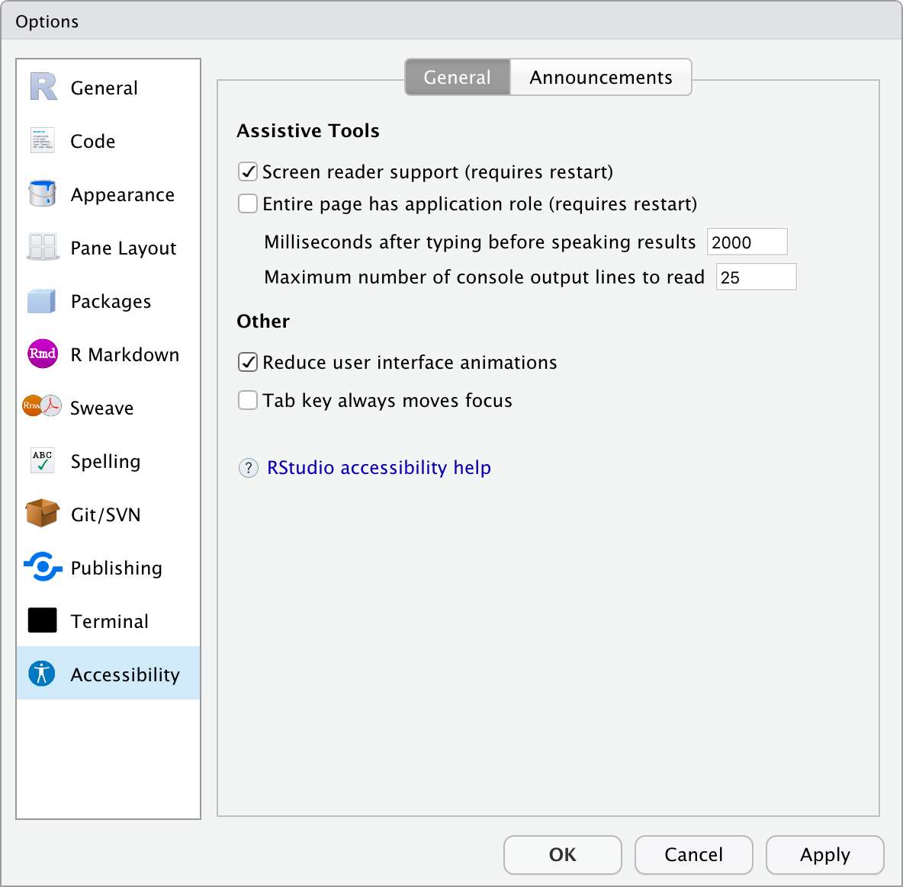

2020-03-04
This blog post is part of a series on new features in RStudio 1.3, currently available as a preview release.
Screen reader users, and anyone who operates software entirely via keyboard or alternate input devices, have not been able to use the RStudio IDE due to accessibility shortcomings within the software itself. Troublesome areas have also cropped up for those with low-vision, including color blindness, and those with auditory impairments (e.g. captioning for our online video resources).
RStudio is happy to announce that we have started identifying and tackling these issues. It will be an ongoing process, and moving forward we will continue making accessibility improvements to all our products, and incorporate accessibility considerations into how we design, build, test, document, and support our products. Please email accessibility-related questions and feedback to accessibility@rstudio.com.
A lot of engineering work has gone into RStudio 1.3 to improve screen reader support, keyboard support, and other general accessibility improvements.
New to RStudio 1.3 is an accessibility submenu under the Help menu, and an accessibility panel in the Global Options dialog. These provide options of interest to screen reader and/or keyboard-only users. Some of these options will be discussed in relevant sections below.

People with motor disabilities often use computers without a mouse; they use a keyboard or a variety of specialized input devices that behave like keyboards. Thus, accessible keyboard support is crucial for them to be successful using RStudio. The same is true for people who are blind; they rely on the keyboard, in conjunction with a screen reader.
Important considerations for accessible keyboard support are:
If you are a mouse user then this may not seem important. Typing generally happens where you last clicked the mouse or where you see a blinking caret, and if you need to click on a widget, you’ll click on the widget. However, being able to reduce use of the mouse and keep your hands on the keyboard can provide productivity and efficiency gains for all users, and possibly even reduce Repetitive Stress Injury (RSI).
For the sighted or partially sighted keyboard user not using a screen reader, a visual indicator of focus location is critical. Focus can be moved either through RStudio-specific keyboard shortcuts (e.g. Ctrl+2 moves focus to the RStudio console), or via Tab and Shift+Tab, and in some cases, the arrow keys.
When moving focus with the keyboard RStudio 1.3 now shows a blue focus rectangle around the currently focused control. When moving focus by clicking the mouse, the focus rectangles are often kept hidden but tapping the Shift key will temporarily trigger display of the focus rectangle.
Some areas of RStudio indicate focus via a caret, such as the blinking cursor in the Console when it has focus, instead of a focus rectangle.
Here is an animated GIF screen capture showing navigation through the New Project dialog with the Tab key.
In prior versions of RStudio, this dialog was completely inaccessible via the keyboard. It did not show where focus was located, nor could the controls be activated via the spacebar as they can in 1.3.
The above animation demonstrates that when focus is on the last control in the dialog (the Cancel button), hitting the Tab key wraps focus around to the start of the dialog and sets focus on the first control (the New Directory button in the example). In previous versions of RStudio, hitting Tab at the end of a modal dialog would send focus to user interface areas outside the dialog, areas that were intended to be “under” the dialog, and disabled. For example, it was possible to get focus back into the R console and enter commands while modal dialogs were displayed, breaking both the modal nature of the dialogs, and putting the RStudio application into undefined and untested states. This also had serious usability implications for screen reader users.
This has been fixed in 1.3, and focus now correctly stays in a modal dialog when using Tab or Shift+Tab at the end or beginning of the dialog.
Once a control has focus it needs to respond to standardized keyboard interaction patterns. For example, buttons should generally respond to spacebar the same way as they would to a mouse click, tab controls should respond to the arrow keys to move between the tabs, and so forth.
Most controls in the RStudio 1.3 IDE have been updated to respect these conventions, though work remains to improve keyboard support in areas such as the Files pane and the Environment pane, and others. The final RStudio 1.3 accessibility documentation will outline areas where keyboard support is still incomplete, with workarounds whenever possible.
With RStudio Desktop the main menu (File, Edit, and so on) is a standard application menu, and responds to standard system keyboard shortcuts. On Microsoft Windows, for example, tapping the Alt key will put focus on the menubar and then arrow keys can be used to move around; or Alt+F will bring up the File menu directly.
On RStudio Server, the main menu is actually part of the web page, and thus requires slightly different shortcuts. Tapping Alt (on Windows), for example, puts focus on the Web Browser’s main menu, not the RStudio menu.
RStudio Server 1.3 adds customizable keyboard shortcuts to get focus to the main menu, at which point the arrow keys can be used to navigate around the menus in essentially the same manner as standard application menus.
Each menu has its own shortcut, but a couple of useful shortcuts to get started with are Alt+Shift+F to get to the File menu and Alt+Shift+H for the Help menu. Those work on Windows and Linux. On Mac, the keys are Ctrl+Option+F and Ctrl+Option+H. A full list of shortcuts is in the keyboard help (Help / Keyboard Shortcuts Help).
Prior to RStudio Server 1.3, the only way to get focus on the main menu was via the mouse.
RStudio 1.3 supports resizing the panes using the keyboard; previously the only way to do this was by dragging the splitters with the mouse.
To activate, use View / Panes / Adjust Left Splitter (or Right Splitter, or Center Splitter), then use the arrow keys to move it in larger increments. Use Shift+Arrow keys to make smaller adjustments. When done, just continue using RStudio (e.g. you can use Tab key to move focus off the splitters).
In addition to opening up this ability to keyboard-only users, it has the side-effect of making it possible for iPad users to adjust the splitters with their keyboard (the splitters are not currently operable via touch).
In the RStudio source editor and console, the Tab key is normally used to indent code and to trigger autocomplete suggestions, thus cannot be used to move focus out of the text editor or the console. This is known as a Tab trap in accessibility parlance.
The most common way around this is using other RStudio keyboard shortcuts to get focus elsewhere (Ctrl+1 to move focus to source editor, Ctrl+2 to the console, etc.), or with screen reader commands.
Additionally, a new accessibility option is available to change this behavior. The “Tab key always moves focus” setting is available in the new Accessibility Options pane in the Global Options dialog, and also via the new Help / Accessibility / Focus submenu. When enabled, the Tab key will now permit Tab and Shift+Tab to move focus in and out of these areas of the user interface.
A number of issues remain in terms of keyboard focus location changing in a consistent and predictable fashion. For example, after displaying then closing the RStudio Server main menu, or a dialog box such as Global Options, the keyboard focus will often end up in an indeterminate location and the user must then use Ctrl+2 to put focus back on the console (for example). Significant improvements in this area are planned as part of ongoing accessibility work.
User interfaces must have enough contrast between text and its background to be readable by people with moderately low vision. The Web Content Accessibility Guidelines (WCAG) define the measuring technique and recommended minimum values to accommodate a wide range of low-vision scenarios.
Many areas of the RStudio interface have been reviewed and adjustments made to bring contrast up to meet minimum WCAG 2.1 AA standards. Some areas of the interface still require work, especially some non-textual elements such as toolbar buttons.
RStudio supports many visual themes, but only the appearance of the default light theme has been evaluated. Future work will include creation of specific high-contrast themes that go well beyond the recommended minimum contrast recommendations.
RStudio 1.3 does not include themes specifically designed for color blindness. We hope to include such themes in the future. In the meantime, some themes have been created by the RStudio community, for example the Pebble-Safe themes by Desi Quintans at https://github.com/DesiQuintans/Pebble-safe (linked with their permission).
The new “Reduce user interface animations” setting does very much what it suggests: when enabled, most of the subtle animations that take place in the RStudio user interface are suppressed. An example is when zooming or unzooming a pane, such as with Ctrl+Shift+2 to zoom the console. Normally zooming and unzooming causes the other panes to slide to their new positions. With animations disabled, these changes are instantaneous.
The option to reduce motion is provided both for those with vestibular disorders, who might prefer to disable these motions, and also for screen reader users, where these time-delayed changes can sometimes confuse the screen reader software. In fact, the “reduce animations” setting is enabled automatically when screen reader support is turned on.
RStudio Server and RStudio Server Pro 1.3 are significantly improved over prior versions in their screen reader capabilities. This support is still very much a work-in-progress, and improvements will continue to be made in subsequent releases of RStudio to bring the screen reader experience up to the standards of accessibility and usability that users need and expect to get their work done.
RStudio Desktop 1.3 (for Windows, Linux, and macOS) has most of the same improvements seen in RStudio Server, but due to underlying accessibility issues introduced by components used to build RStudio Desktop, we cannot yet recommend its use via a screen reader except in an experimental fashion. We are actively working with the developer of these components to get these issues addressed, and will be releasing updates with these fixes as soon as we can.
When using RStudio Server 1.3 with a screen reader, it is essential to enable screen reader support. Once set, this setting is persisted for future RStudio sessions. The option is available to toggle via the main menu at Help / Accessibility / Screen Reader Support, or via the Global Options dialog, under the Accessibility panel.
Thanks to the new configuration and settings system in RStudio 1.3, as discussed in a prior blog post, it is possible for an administrator to pre-enable this setting for an entire server, or for individual users. The important settings are:
"reduced_motion": true,
"enable_screen_reader": trueNote that the above technique is specific to RStudio Server; preconfiguring screen reader support for RStudio Desktop will be done in a different way and will be documented in the forthcoming accessibility documentation.
RStudio Server screen reader support has primarily been tested with current versions of NVDA on Google Chrome for Windows, and VoiceOver on Safari for macOS. Some testing has also been performed with NVDA and Firefox, and JAWS and Chrome.
The goal is to support all major screen readers and browsers, so please report issues with any of these.
Screen reader software announces (via voice, or a refreshable braille display) details about each control as it receives focus. It is critical that each control is properly labeled both in terms of identifying text (for example, the text on a button or next to a checkbox), the type of control (checkbox, button, tab control, menu, toolbar, and so forth), and the current state of the control (checked, disabled, selected, value of the text in a text box, etc.).
Most areas of RStudio 1.3 have been updated to ensure this is the case. In prior versions, many controls were missing some or all of this identifying information, making it impossible to meaningfully navigate via a screen reader.
The RStudio 1.3 page has been annotated to divide it up into named landmarks (also known as regions in some screen readers), providing another way to understand and move around the user interface. The regions in the default visual layout of RStudio are:
RStudio makes use of live-announcements to notify the screen reader user of certain events. All potential automatic announcements are listed in the Announcements tab of the Accessibility Preferences pane in Global Options, and can be individually enabled or disabled.
For example, when a command is executed in the R console, output from that command is announced by the screen reader (up to a limit of 25 lines per command, configurable in the Accessibility Options). To read additional output, use the screen reader’s virtual cursor mechanism to navigate the output area. Focus may also be moved to the output area via the Help / Accessibility / Focus / Focus Console Output command, shortcut key is Alt+Shift+2 on Windows and Linux, Shift+Option+2 on Mac.
Some announcements may only be triggered on-demand by the user. For example, Help / Accessibility / Speak / Speak Text Editor Location will read details of the current location in the text editor, including line and column number, context, file type, and file name.
Work continues to bring screen reader support to RStudio Desktop, and to expose more of the RStudio IDE features to screen reader and keyboard-only users.
If you’d like to give the new accessibility enhancements a try, we’d very much welcome your feedback on our community forum. You can download the RStudio 1.3 preview here:
For more, check out out the support article on RStudio accessibility.
Additionally, we have an alpha program where we provide access to a server running the latest RStudio Server build with accessibility features enabled. Apply for an account by emailing accessibility@rstudio.com and provide some background on the accessibility functionality you are interested in evaluating.